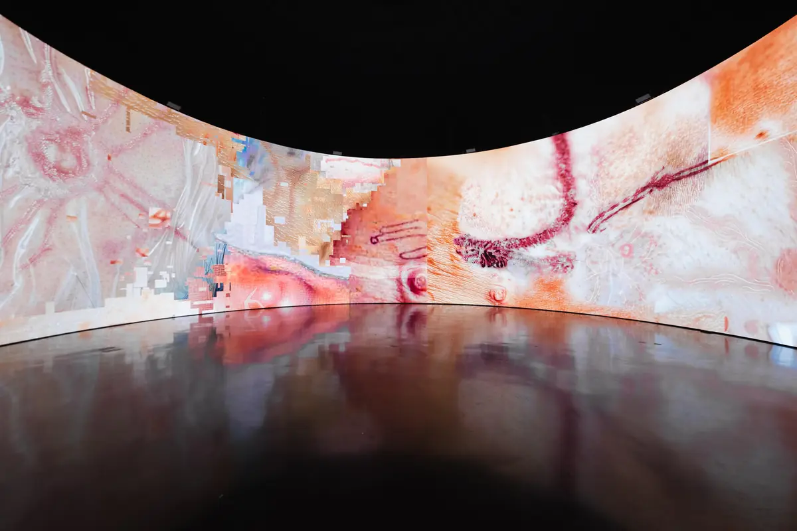

Xu Nuo / 徐诺 — artist portfolio
Moving image · Installation · Performance · Text
SCROLL TO WORKS ↓Selected Works
01 / 14A selection of moving image, spatial experiments, gestures and constructed situations.
An image to enter by. The rest can unfold as you move.

2025View work ↗Curatorial & Related Projects
02 / 04 PROJECTSExhibitions, collaborations, and projects shaped through collective work.
About / CV
03 / INFORMATIONBIOGRAPHY
Artist working with moving images, installations, performance, and text.
Xu Nuo (b. 2001, Hangzhou, China) is currently pursuing a master's degree at the School of Intermedia Art, China Academy of Art, with a research focus on Regional Perception and Mixed Reality. Her practice begins with subtle observations of everyday life, using image reconfiguration, material experimentation, site-specific interventions and constructed situations to reconsider the relationships between bodies, media and environments.
Education
MA, China Academy of Art, School of Intermedia Art — Regional Perception and Mixed Reality
BA, China Academy of Art, School of Intermedia Art — Free Art Studio
Selected Exhibitions
Contact
04 / CONTACTText
05 / 03Silence is a skill that requires constant practice.
I Have Nothing to Say. Or Do I? ↗ 02 / 2025What happens when nothing happens?
What Happens When Nothing Happens ↗ 03 / 2025To disturb a world saturated with appearances; to stir the dust of data, of perception, of meaning.
All That Appears ↗